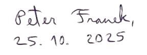

Toto je čtvrtý a poslední díl mé minisérie o časových razítkách a eIDAS normách. Uvádím tady několik doporučení ohledně toho, jak podepisovat dokumenty levně, bezpečně, a s dlouhodobou platností.
Pro běžnou práci s elektronickými podpisy by nemělo být nutné kupovat placenej software.
Pokud jste jednotlivec anebo malá firma a musíte jednou za čas podepsat nějaký pdf dokument, nejjednodušší je použít volnou verzi Adobe Acrobat (Windows, Mac) anebo Okular (Linux).
Pokud chcete mít větší kontrolu nad tím, co děláte, anebo podepisování zautomatizovat pro větší dávky, existuje open source knihovna pyHanko, která implementuje běžné věci kolem elektronických podpisů a razítek. Tady je minimalistická verze podepisovacího skriptu, která podporuje základní úrovně B-B, B-T, B-LT a B-LTA.
U mnoha podepsaných dokumentů stačí i krátkodobá ověřitelnost B-B, bez certifikovaného časového razítka. Příklady: komunikace s úřady, faktura, záruka na zboží s omezenou dobou platnosti apod. Pokud už kvalifikované časové razítko potřebujete, doporučuji estonskou firmu SK ID Solutions která prodává kvalifikovaná razítka výrazně levněji než čeští prodejci. Cena jednoho časového razítka se tam pohybuje od 15 haléřů do 1 koruny. (Nejsem s nima nijak spojen, jen jsem to vygooglil a porovnal ceny.)V malém množství poskytuje kvalifikovaná časová razítka zdarma firma Sectigo (stav k říjnu 2025), hlavně pro testovací účely.
Zde je výborná validační webová stránka, která po nahrání dokumentu detailně ověří, co přesně v podpisu nebo časovém razítku je, na jaké úrovni, a zda to splňuje různé EU standardy.Pokud máte velké množství dokumentů k dlouhodobé archivaci, tak opatřit je časovými razítky může představovat jeden z netriviálních nákladů. Lze ho efektivně snížit použitím sdílených razítek (nenašel jsem na to zatím ustálený terminus technicus).
Pro důkaz integrity a času dokumentů můžeme získat TSA razítko hashe, kterej reprezentuje větší skupinu dokumentů.
Praktická implementace této myšlenky je popsal například německý úřad BSI ve své technické specifikaci (kapitola 4.18, 4.19.), anebo akademická studie Sorge-Leicht (2012).
V tomto schématu budeme dokumenty jedné skupiny, kterou chceme orazítkovat, reprezentovat jako listy binárního stromu. Ke každému dokumentu přiradíme jeho hash. Tzv. Merkleho strom se zkonstruuje postupným výpočtem dalších hashů které reprezentují dokumenty pod každým uzlem. Časová autorita TSA poté vystaví jediné razítko na kořenovej hash tohoto stromu, čímž je zajištěno, že razítko pokrývá všechny dokumenty v dávce..
Pro ověření integrity nějakého dokumentu pak stačí mít původní dokument, znát hash souseda a hash každého souseda v cestičke ke kořenu stromu. Kdyby skupina měla milion dokumentů, měl by strom hloubku přibližně 20, a potřeboval bych k mému dokumentu znát přibližně 20 hashů. Ty bych pak ukázal ověřovateli společně s mým dokumentem.
Myšlenka Merklových stromů a sdílených důkazů vychází z blockchainové technologie, nicméně je plně kompatibilní s eIDAS normou. Článek 42 říká:
Kvalifikované elektronické časové razítko (...) spojuje datum a čas s daty takovým způsobem, aby byla přiměřeně zamezena možnost nezjistitelné změny dat.
Technický standard IETF RFC 4998 (Evidence Record Syntax) popisuje tento přístup explicitně.Ekosystém eIDAS je vymyšlen chytře, i když na první pohled to může působit složitější než by mělo být. Neexistuje lepší způsob jak dlouhodobě uchovat důvěru? Pomohla by tady úplně jiná technologie, více decentralizovaná, jako třeba blockchain? Napište mi do komentářů co o tom soudíte.
eIDAS 2024/1183 přináší do evropského právního rámce i pojem tzv. distributed ledger technology (DLT), tedy technologii distribuované účetní knihy. Nejde přitom o jeden konkrétní systém, ale o princip - data jsou zapisována do sdíleného, kryptograficky zabezpečeného registru, který mohou spravovat různí důvěryhodní účastníci současně. Zatím mi však není zcela jasné, jestli a jak to bude fungovat.
Samostatnou kapitolou jsou elektronické podpisy a razítka, která lze vytisknout a uchovat fyzicky na papíře - třeba ve formě QR kódu, podobně jako u covid certifikátů. To by asi bylo spíš téma na samostatný článek, nicméně i eIDAS počítá s integrací takovýchto prvků do své budoucí infrastruktury.
Na závěr bych dodal, že i když je elektronický podpis hezká technologie, ničemu nevadí podepisovat dokumenty ručně – tak jako kdysi. Dokázat pravost může být někdy složitější, ale z hlediska práva v tom nakonec není rozdíl. Pokud by člověk chtěl, aby dokument vydržel opravdu dlouho, třeba stovky let, může být papír nakonec i jistější.
